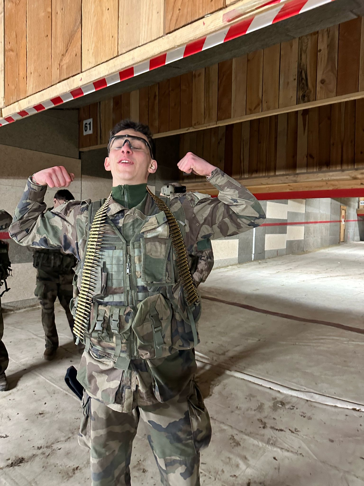

Profil :
Actuellement, étudiant motivé et curieux, avec un niveau B2 en anglais, ce qui me permet de communiquer facilement dans des contextes variés, que ce soit à l’école ou dans un cadre professionnel. Autonome et débrouillard, j’aime relever de nouveaux défis et trouver des solutions par moi-même face à des situations nouvelles. Rigoureux dans mon travail et naturellement curieux, je m’investis pleinement dans les projets que j’entreprends et cherche constamment à développer de nouvelles compétences et à approfondir mes connaissances.
J’ai suivi tout mon collège et mon lycée dans l’établissement Bossuet, à Brive-la-Gaillarde. Persévérant et engagé, je mets du sérieux et de la détermination dans les objectifs que je me fixe.
Depuis deux ans, je suis également membre de la réserve militaire. Cette expérience m’a appris à être plus responsable, discipliné et à travailler efficacement en équipe, tout en développant ma capacité à m’adapter à des environnements exigeants.
